Encoder Incremental 2 Fases Medición de Velocidad y Dirección
Motor trifásico con VFD ABB + PLC Delta SE · Análisis del encoder, lectura, escalado y tiempos de respuesta
7
Actividades
11
Imágenes
4
Bases de Tiempo
🎯
Objetivos de la Práctica
Identificar físicamente el encoder incremental de 24 V de 2 fases (A y B) y comprender su conexionado al PLC.
Visualizar en osciloscopio las señales A y B, comprendiendo el desfase de 90° para determinar el sentido de giro.
Conectar el encoder al PLC Delta SE (entradas X0 y X1) y configurar la instrucción SPD.
Implementar lógica de contactos con detección de flancos para identificar la dirección de giro.
Escalar la lectura SPD para obtener RPS y RPM con bases de tiempo de 1000, 700, 300 y 200 ms.
Medir el tiempo de establecimiento de la velocidad nominal del motor trifásico.
Registrar los tiempos al alcanzar el 67 % y 23 % de la velocidad nominal (preparación para sintonía PID por método de los dos puntos de Smith, Sesión 2).
01
Forma Física del Encoder Incremental 24 V — 2 Fases
📋 Descripción General
El encoder incremental genera dos señales cuadradas (Fase A y Fase B) desfasadas 90° eléctricos. Adicionalmente suele incluir una señal de referencia Fase Z (pulso único por vuelta) y líneas de alimentación.
⚡
Alimentación
24 V DC
Rango típico 10–30 V DC
📐
PPR
500–1024
Pulsos por revolución
🔁
Resolución ×4
2000–4096
Modo cuádruple (AB ambos flancos)
📡
Frecuencia Máx.
100–300 kHz
Respuesta del encoder
🔌 Identificación de Terminales
Terminal
Color Típico
Función
Conexión
VCC
🟤 Marrón
+24 V DC
Fuente 24 V
GND
🔵 Azul
0 V (masa)
Fuente 0 V / COM PLC
CH-A
⚫ Negro
Fase A (canal A)
X0 (entrada HSC)
CH-B
⚪ Blanco
Fase B (canal B)
X1 (entrada HSC)
CH-Z
🟢 Verde
Fase Z (índice)
X2 (opcional)
SHLD
🛡️ Malla
Tierra de pantalla
Tierra del gabinete
⚠️
Importante
Verificar el código de colores en la hoja de datos del encoder específico, ya que puede variar según el fabricante (Omron, Autonics, Pepperl+Fuchs, etc.).
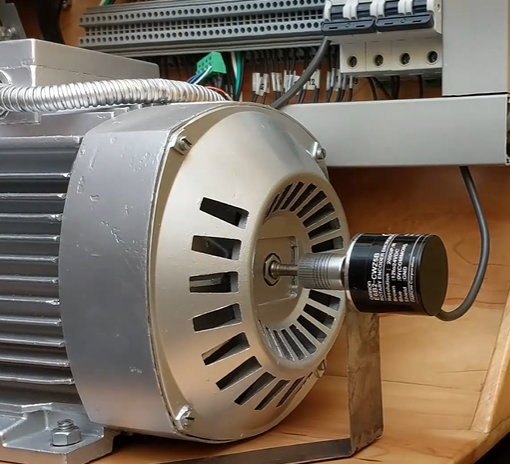
1.PNG
Foto del encoder montado en el motor. Etiquetar bornes visibles.
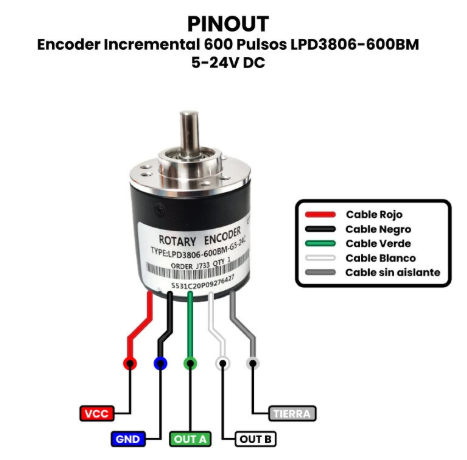
2.PNG
Detalle de la placa de características (PPR, VCC, modelo, fabricante).
02
Señal del Encoder en Osciloscopio — Sentido de Giro
🔧 Procedimiento
Verificar que el encoder esté correctamente alimentado a 24 V DC.
Conectar Canal 1 → Fase A y Canal 2 → Fase B del osciloscopio (referencia a GND común).
Desde el panel del VFD ABB, poner en marcha el motor en sentido horario (CW) a velocidad nominal.
Capturar la forma de onda y observar el desfase de 90° entre A y B.
Detener el motor y reiniciar en sentido antihorario (CCW).
Capturar nuevamente y comparar: la relación de fase A vs B se invierte.
🔍 Regla de Interpretación
✅ Giro Horario (CW)
La Fase A adelanta a la Fase B — el flanco de subida de A ocurre antes que el flanco de subida de B.
A ↑ antes que B ↑CW
🔄 Giro Antihorario (CCW)
La Fase B adelanta a la Fase A — el flanco de subida de B ocurre antes que el flanco de subida de A.
B ↑ antes que A ↑CCW
💡
¿Por qué 90°?
El desfase de un cuarto de ciclo entre A y B permite determinar la dirección de rotación. Cuando A adelanta a B, gira en un sentido; cuando B adelanta a A, gira en el sentido contrario.
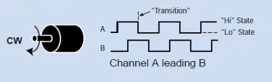
3.PNG
Osciloscopio — Giro horario (CW). Señales A (CH1) y B (CH2) con desfase de 90°.
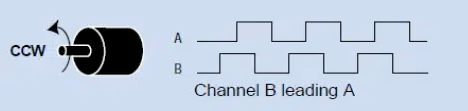
4.PNG
Osciloscopio — Giro antihorario (CCW). Señales A (CH1) y B (CH2) con desfase invertido.
📝 Tabla de Registro
Sentido
¿Quién adelanta?
Desfase medido (µs)
Frecuencia medida (kHz)
CW (Horario)
A adelanta a B
________
________
CCW (Antihorario)
B adelanta a A
________
________
03
Conexión del Encoder al PLC Delta SE e Instrucción SPD
🔌 Diagrama de Conexión
Las entradas X0 y X1 del PLC Delta SE son entradas de alta velocidad (HSC) capaces de leer señales de encoder.
Señal Encoder
→
Entrada PLC Delta SE
Tipo
Fase A (CH-A)
→
X0
Entrada HSC
Fase B (CH-B)
→
X1
Entrada HSC
GND
→
COM del PLC
Masa común
+24 V
→
Fuente externa
Alimentación encoder
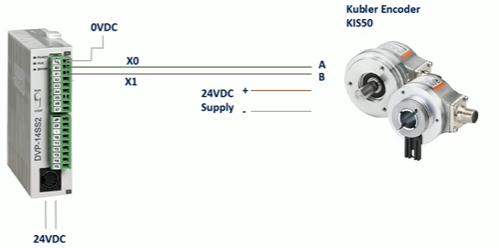
5.PNG
Diagrama de cableado Encoder → PLC Delta SE (X0, X1).
⚡ Instrucción SPD (Speed Detection)
💡
Sintaxis:SPD X0 T D Cuenta pulsos en la entrada X0 durante T milisegundos y almacena el resultado en el registro D. Se utilizan 4 bases de tiempo distintas (1000, 700, 300 y 200 ms) para comparar resolución vs. velocidad de actualización.
⚙️ Configuración de Entradas de Alta Velocidad
Configurar el modo de conteo AB cuádruple (×4) en el registro especial del PLC para maximizar la resolución de lectura:
⚠️
Nota — El registro especial puede variar según el modelo exacto del PLC Delta SE. Consultar el manual de programación DVP-SE para confirmar la dirección del registro de configuración HSC.
04
Detección de Sentido de Giro — Lógica de Contactos y Flancos
🧠 Principio de Funcionamiento
Al detectar el flanco de subida de la Fase A (X0), se lee el estado de la Fase B (X1):
🟢 X1 = 0 → Giro CW
Si al subir A, B está en nivel bajo (0), el giro es Horario.
🔴 X1 = 1 → Giro CCW
Si al subir A, B está en nivel alto (1), el giro es Antihorario.
💻 Implementación en Ladder
Se utilizan 3 networks: detección de flanco de subida en X0, evaluación de estado de X1 para CW, y evaluación de estado de X1 para CCW.
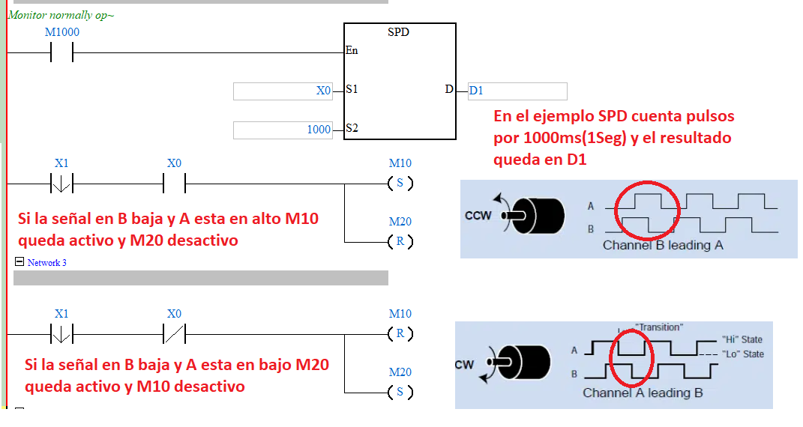
6.PNG
Captura del programa Ladder — lógica de detección de dirección de giro con flancos.
🔮
Alternativa: Modo AB del PLC
El PLC Delta SE puede configurarse en modo AB para detectar dirección automáticamente. El resultado se lee de un bit de estado asociado al contador de alta velocidad (C251, C252, etc.).
05
Escalado de la Lectura SPD → RPS y RPM
📐 Fórmulas Fundamentales
Ecuaciones de Escalado
Pulsos contados en T ms = Dn
RPS = ( Dn × 1000 ) / ( PPR × 4 × T )
RPM = RPS × 60
PPR = pulsos/revolución | ×4 = modo cuádruple | T = base de tiempo en ms
📊 Tabla de Escalado — Ejemplo: PPR = 1024, Modo Cuádruple → 4096 pulsos/rev
Base T (ms)
Fórmula RPS
Fórmula RPM
Factor de Escala
1000
RPS = Dn × 1000 / (4096 × 1000)
RPM = Dn × 60 / 4096
Dn / 4096
700
RPS = Dn × 1000 / (4096 × 700)
RPM = Dn × 60 / 2867.2
Dn / 2867.2
300
RPS = Dn × 1000 / (4096 × 300)
RPM = Dn × 60 / 1228.8
Dn / 1228.8
200
RPS = Dn × 1000 / (4096 × 200)
RPM = Dn × 60 / 819.2
Dn / 819.2
💻 Implementación en PLC (Escalado en Punto Flotante)
El escalado se implementa convirtiendo el conteo entero a punto flotante, dividiendo entre el factor (PPR × 4) y multiplicando por 60 para obtener RPM.
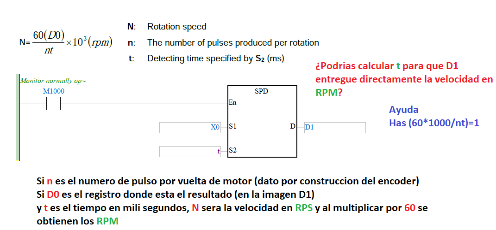
7.PNG
Captura del programa Ladder — bloque completo de escalado RPS / RPM con punto flotante.
📝 Tabla de Resultados Experimentales
Base T (ms)
Dn (pulsos)
RPS
RPM
RPM VFD (ref.)
Error (%)
1000
________
________
________
________
________
700
________
________
________
________
________
300
________
________
________
________
________
200
________
________
________
________
________
06
Tiempo de Establecimiento de la Velocidad del Motor
🔧 Procedimiento
Programar el VFD ABB para arrancar el motor desde 0 Hz hasta la frecuencia nominal (ej. 60 Hz → 1800 RPM para motor de 4 polos).
Iniciar medición de velocidad mediante SPD con base de tiempo 200 ms (mayor resolución temporal).
Al activar la marcha, iniciar un temporizador TMR en el PLC.
Comparar continuamente la velocidad medida con la nominal usando comparadores.
Cuando la velocidad se estabilice dentro de una banda del ±2 % de la nominal, detener el temporizador → registrar el tiempo de establecimiento (ts).
📐 Banda de Establecimiento (±2 %)
Banda ±2% de la Velocidad Nominal
Vnominal = 1800 RPM (ejemplo 60 Hz, 4 polos)
Límite inferior = 1800 × 0.98 = 1764 RPM
Límite superior = 1800 × 1.02 = 1836 RPM
💻 Ladder — Detección de Establecimiento
Se utilizan 3 networks: temporizador activado por señal de marcha, comparadores de banda (DCMP) para detectar cuándo la velocidad entra en rango [1764, 1836], y parada del timer al estabilizar.
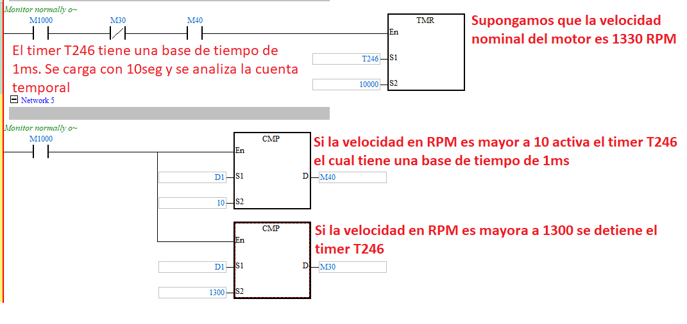
8.PNG
Captura del Ladder — detección de tiempo de establecimiento con comparadores y temporizador.
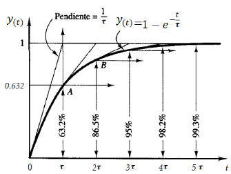
9.PNG
Gráfica velocidad vs tiempo registrada desde HMI/SCADA o PLC.
📝 Resultado
Parámetro
Valor
Velocidad nominal (RPM)
________ RPM
Banda de tolerancia
± ____ % → [ ________ , ________ ] RPM
Tiempo de establecimiento (ts)
________ ms
07
Tiempos al 67 % y 23 % de la Velocidad Nominal
📖 Fundamento Teórico
Estos dos puntos corresponden a la respuesta escalón de un sistema de primer orden con retardo:
🟢 67 % ≈ 1 – e–1
Corresponde a 1 constante de tiempo (τ)
67% de Vnom
🟣 23 % ≈ 1 – e–0.25
Corresponde a 0.25 τ (usado en método de dos puntos de Smith)
23% de Vnom
🔮
Próximo paso — Sesión 2
Estos valores alimentarán el método de los dos puntos de Smith para sintonizar un controlador PID que regule la velocidad del motor a través del VFD ABB.
📐 Cálculo de Umbrales
Umbrales de Velocidad
Vnominal = ________ RPM
V67% = Vnominal × 0.67 = ________ RPM
V23% = Vnominal × 0.23 = ________ RPM
💻 Ladder — Detección de Cruces de Umbral
Se utilizan 3 networks: temporizador desde la señal de arranque, comparador para cruce del 23 % (almacenar tiempo en D300), y comparador para cruce del 67 % (almacenar tiempo en D310).
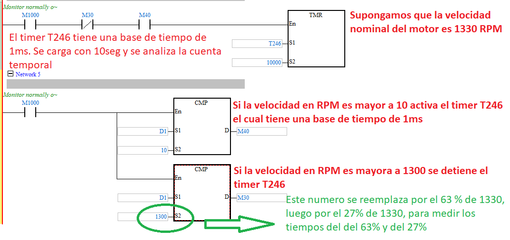
10.PNG
Captura del Ladder — detección de cruce de umbrales 23 % y 67 %.
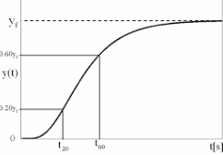
11.PNG
Gráfica velocidad vs tiempo con marcadores al 23 % y 67 %.
📝 Tabla de Resultados
Umbral
Porcentaje
Valor (RPM)
Tiempo (ms)
Equivalencia
V23%
23 %
________
________
≈ 0.25 τ
V67%
67 %
________
________
≈ 1 τ
🎓
Preparación para la Sesión 2
Con los valores de t23% y t67%, aplicaremos el método de los dos puntos de Smith para estimar K, τ y L del modelo FOPDT, y calcular Kp, Ti y Td del PID.
✅
Checklist de Entregables — Sesión 1
Fotos del encoder y placa de datos 1.PNG, 2.PNG
Capturas de osciloscopio CW y CCW 3.PNG, 4.PNG
Diagrama de conexión encoder → PLC 5.PNG
Programa Ladder detección de dirección 6.PNG
Programa Ladder escalado RPS/RPM 7.PNG
Programa Ladder tiempo de establecimiento 8.PNG
Gráfica velocidad vs tiempo 9.PNG
Programa Ladder detección 23 % / 67 % 10.PNG
Gráfica con marcadores de umbral 11.PNG
Tablas de resultados completas Informe
🚀 Próxima Sesión
🔮
Sesión 2 — Sintonía de PID por Método de los Dos Puntos de Smith Estimaremos K, τ y L del modelo FOPDT a partir de t23% y t67%, y calcularemos las ganancias Kp, Ti y Td para el PID del control de velocidad del motor trifásico vía VFD ABB.